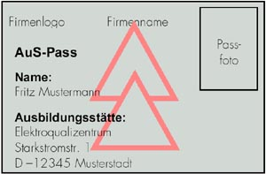
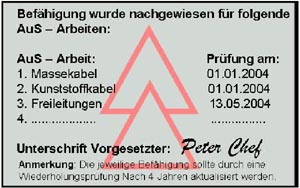

Anhang 3
Beispiel für einen Pass „Arbeiten unter Spannung“ (AuS-Pass)
Ein AuS-Pass sollte folgende Informationen enthalten:
- Passbild,
- Name, Vorname,
- Ausbildungsstätte,
- Aufführung der jeweiligen Arbeiten, für die eine Ausbildung erfolgte,
- Datum der Prüfung,
- Unterschrift des Vorgesetzten,
- Anmerkung zur Wiederholungsausbildung nach vier Jahren bzw. Gültigkeitsdauer.
Wegen der Vielfalt an AuS-Arbeiten ist die Bestätigung der Befähigung nur auf Grund der nachfolgenden Basistechnologien vorzunehmen:
- Massekabel
- Kunststoffkabel
- MSR-Anlagen
- Zähleranlagen
- Freileitungen
- Schaltanlagen
- Batterieanlagen
- MS-Freileitung
- MS-Schaltanlagen
- An- und Abklemmen von Zählern
Beispiel für Vorder- und Rückseite eines AuS-Passes in Scheckkartenformat:

